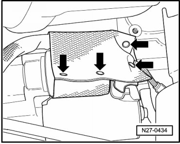
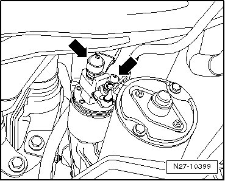
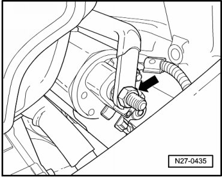
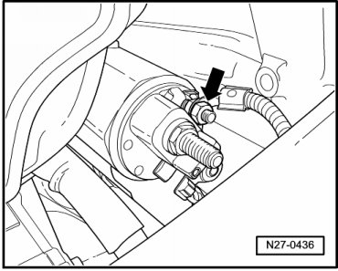
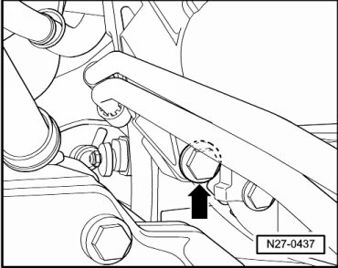
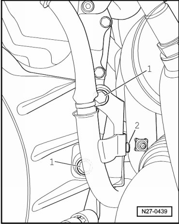
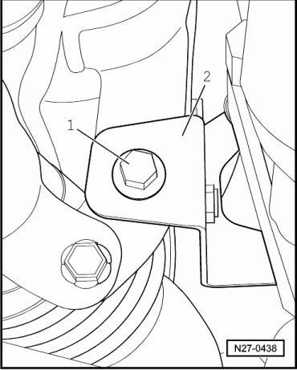
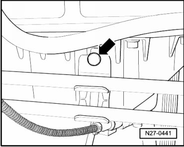
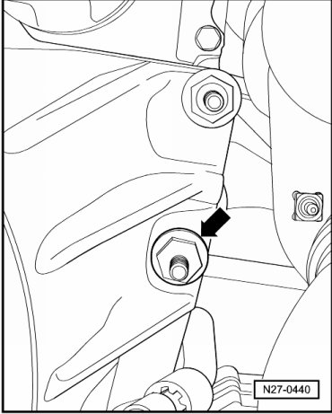

Engine Codes BAA, BMX, BHL and BHK
Starter
Special tools, testers and auxiliary items required
• Torque Wrench (V.A.G 1331/)
• Torque Wrench (V.A.G 1332/)
Removing
CAUTION!
When disconnecting battery, procedure must always be followed as described in the repair information --> [ Battery, with Auxiliary Battery or Two-Battery Layout, Disconnecting and Connecting ] Battery, with Auxiliary Battery or Two-Battery Layout, Disconnecting and Connecting. Not adhering to sequence will result in the deactivation of Main Battery Switch -E74- and subsequent damage to electrical system components.
- Disconnect battery --> [ Battery, One-Battery Layout, Disconnecting and Connecting ] Battery, One-Battery Layout, Disconnecting and Connecting.
- Remove noise insulation.
- Open snaps - arrows - and remove starter solenoid heat shield mat.

- Pry off protective caps for mounting nuts - arrows -.

- Remove nut at solenoid positive (B+) terminal - arrow -.

- Remove nut at solenoid Terminal 50 - arrow -.

CAUTION!
Screw connections on magnetic switch can twist.
The solenoid switch can be damaged.
When removing and installing nuts at positive terminal and terminal 50, counterhold the threaded connection at the solenoid switch using an open-end wrench.
- Remove lower starter bolt M12•60 - arrow - on engine side.

- Remove bolt - 2 - for cable retainer and set aside.

- Remove nuts - 1 -.
- Remove bolt - 1 - from exhaust system bracket - 2 - from engine side and remove bracket.

- Remove bolt for coolant pipe - arrow - at engine sump.

- Remove the upper bolt for the starter - arrow - on the transmission side.

- Remove starter.
Installing
Install in reverse order of removal, noting the following:
- Tighten the fasteners to the specification --> [ Starter ] [1][2]Specifications.